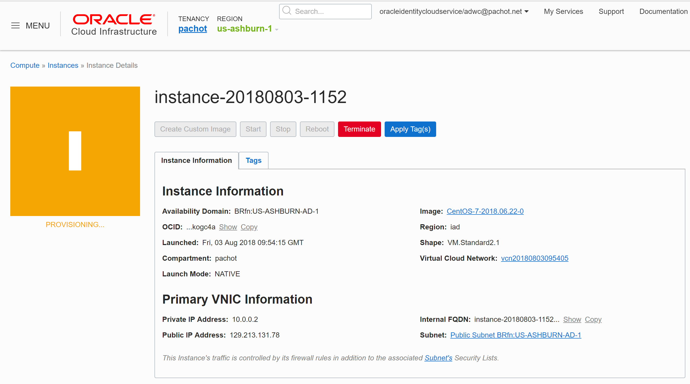

This was first published on https://www.dbi-services.com/blog/oracle-18c-preinstall-rpm-on-redhat-rhel/ (2018-08-03)
Republishing here for new followers. The content is related to the versions available at the publication date.
.
The Linux prerequisites for Oracle Database are all documented but using the pre-install rpm makes all things easier. Before 18c, this was easy on Oracle Enterprise Linux (OEL) but not so easy on RedHat (RHEL) where the .rpm had many dependencies on OEL and UEK.
Now that 18c is there to download, there’s also the 18c preinstall rpm and the good news is that it can be run also on RHEL without modification.
This came to my attention on Twitter:
On the other hand, you may not have noticed that it no longer requires Oracle Linux specific RPMs. It can now be used on RHEL and all its derivatives.
— Avi Miller (@AviAtOracle) July 29, 2018
And of course this is fully documented:
https://docs.oracle.com/en/database/oracle/oracle-database/18/cwlin/about-the-oracle-preinstallation-rpm.html#GUID-C15A642B-534D-4E4A-BDE8-6DC7772AA9C8
In order to test it I’ve created quickly a CentOS instance on the Oracle Cloud: 
I’ve downloaded the RPM from the OEL7 repository:
[root@instance-20180803-1152 opc]# curl -o oracle-database-preinstall-18c-1.0-1.el7.x86_64.rpm https ://yum.oracle.com/repo/OracleLinux/OL7/latest/x86_64/getPackage/oracle-database-preinstall-18c-1.0-1 .el7.x86_64.rpm
% Total % Received % Xferd Average Speed Time Time Time Current
Dload Upload Total Spent Left Speed
100 18244 100 18244 0 0 63849 0 --:--:-- --:--:-- --:--:-- 63790
then ran the installation:
[root@instance-20180803-1152 opc]# yum -y localinstall oracle-database-preinstall-18c-1.0-1.el7.x86_ 64.rpm
It installs automatically all dependencies:
Installed:
oracle-database-preinstall-18c.x86_64 0:1.0-1.el7
Dependency Installed:
compat-libcap1.x86_64 0:1.10-7.el7 compat-libstdc++-33.x86_64 0:3.2.3-72.el7 glibc-devel.x86_64 0:2.17-222.el7 glibc-headers.x86_64 0:2.17-222.el7
gssproxy.x86_64 0:0.7.0-17.el7 kernel-headers.x86_64 0:3.10.0-862.9.1.el7 keyutils.x86_64 0:1.5.8-3.el7 ksh.x86_64 0:20120801-137.el7
libICE.x86_64 0:1.0.9-9.el7 libSM.x86_64 0:1.2.2-2.el7 libXext.x86_64 0:1.3.3-3.el7 libXi.x86_64 0:1.7.9-1.el7
libXinerama.x86_64 0:1.1.3-2.1.el7 libXmu.x86_64 0:1.1.2-2.el7 libXrandr.x86_64 0:1.5.1-2.el7 libXrender.x86_64 0:0.9.10-1.el7
libXt.x86_64 0:1.1.5-3.el7 libXtst.x86_64 0:1.2.3-1.el7 libXv.x86_64 0:1.0.11-1.el7 libXxf86dga.x86_64 0:1.1.4-2.1.el7
libXxf86misc.x86_64 0:1.0.3-7.1.el7 libXxf86vm.x86_64 0:1.1.4-1.el7 libaio-devel.x86_64 0:0.3.109-13.el7 libbasicobjects.x86_64 0:0.1.1-29.el7
libcollection.x86_64 0:0.7.0-29.el7 libdmx.x86_64 0:1.1.3-3.el7 libevent.x86_64 0:2.0.21-4.el7 libini_config.x86_64 0:1.3.1-29.el7
libnfsidmap.x86_64 0:0.25-19.el7 libpath_utils.x86_64 0:0.2.1-29.el7 libref_array.x86_64 0:0.1.5-29.el7 libstdc++-devel.x86_64 0:4.8.5-28.el7_5.1
libverto-libevent.x86_64 0:0.2.5-4.el7 nfs-utils.x86_64 1:1.3.0-0.54.el7 psmisc.x86_64 0:22.20-15.el7 xorg-x11-utils.x86_64 0:7.5-22.el7
xorg-x11-xauth.x86_64 1:1.0.9-1.el7
Note that the limits are stored in limits.d which has priority over limits.conf:
[root@instance-20180803-1152 opc]# cat /etc/security/limits.d/oracle-database-preinstall-18c.conf
# oracle-database-preinstall-18c setting for nofile soft limit is 1024
oracle soft nofile 1024
# oracle-database-preinstall-18c setting for nofile hard limit is 65536
oracle hard nofile 65536
# oracle-database-preinstall-18c setting for nproc soft limit is 16384
# refer orabug15971421 for more info.
oracle soft nproc 16384
# oracle-database-preinstall-18c setting for nproc hard limit is 16384
oracle hard nproc 16384
# oracle-database-preinstall-18c setting for stack soft limit is 10240KB
oracle soft stack 10240
# oracle-database-preinstall-18c setting for stack hard limit is 32768KB
oracle hard stack 32768
# oracle-database-preinstall-18c setting for memlock hard limit is maximum of 128GB on x86_64 or 3GB on x86 OR 90 % of RAM
oracle hard memlock 134217728
# oracle-database-preinstall-18c setting for memlock soft limit is maximum of 128GB on x86_64 or 3GB on x86 OR 90% of RAM
oracle soft memlock 134217728
Note that memlock is set to 128GB here but can be higher on machines with huge RAM (up to 90% of RAM)
And for information, here is what is set in /etc/sysctl.conf:
fs.file-max = 6815744
kernel.sem = 250 32000 100 128
kernel.shmmni = 4096
kernel.shmall = 1073741824
kernel.shmmax = 4398046511104
kernel.panic_on_oops = 1
net.core.rmem_default = 262144
net.core.rmem_max = 4194304
net.core.wmem_default = 262144
net.core.wmem_max = 1048576
net.ipv4.conf.all.rp_filter = 2
net.ipv4.conf.default.rp_filter = 2
fs.aio-max-nr = 1048576
net.ipv4.ip_local_port_range = 9000 65500
Besides that, the preinstall rpm disables NUMA and transparent huge pages (as boot options in GRUB). It creates the oracle user (id 54321 and belonging to groups oinstall,dba,oper,backupdba,dgdba,kmdba,racdba)
{kind=link}